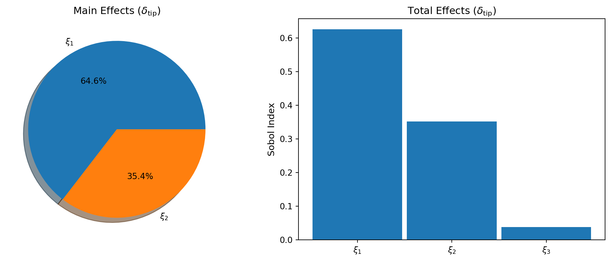
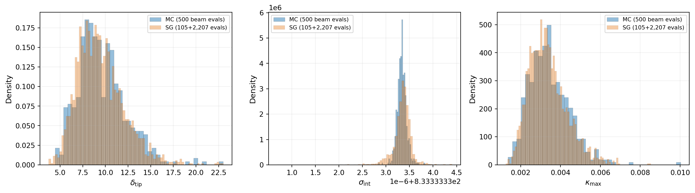
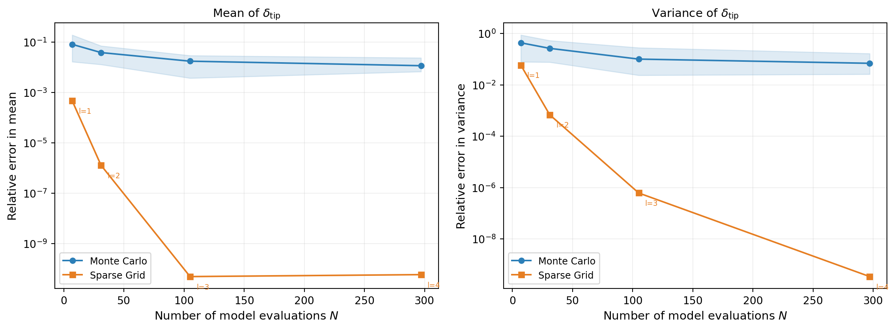

import numpy as np
import matplotlib.pyplot as plt
from pyapprox.util.backends.numpy import NumpyBkd
from pyapprox.benchmarks.instances.pde.cantilever_beam import (
cantilever_beam_1d,
)
from pyapprox.surrogates.sparsegrids import (
IsotropicSparseGridFitter,
TensorProductSubspaceFactory,
create_basis_factories,
)
from pyapprox.surrogates.affine.indices import LinearGrowthRule
bkd = NumpyBkd()
benchmark = cantilever_beam_1d(bkd, num_kle_terms=3)
model = benchmark.function()
prior = benchmark.prior()
marginals = prior.marginals()
nvars = model.nvars()
nqoi = model.nqoi()
qoi_labels = [
r"$\delta_{\mathrm{tip}}$",
r"$\sigma_{\mathrm{int}}$",
r"$\kappa_{\max}$",
]
# Build isotropic sparse grid
factories = create_basis_factories(marginals, bkd, basis_type="gauss")
growth = LinearGrowthRule(scale=2, shift=1)
tp_factory = TensorProductSubspaceFactory(bkd, factories, growth)
level = 3
fitter = IsotropicSparseGridFitter(bkd, tp_factory, level)
samples = fitter.get_samples()
values = model(samples)
result = fitter.fit(values)
surrogate = result.surrogateUQ with Sparse Grids
PyApprox Tutorial Library
Compute moments from sparse grid quadrature, convert to PCE for Sobol indices, and compare efficiency against Monte Carlo.
TipDownload Notebook
Learning Objectives
After completing this tutorial, you will be able to:
- Compute mean and variance directly from a sparse grid surrogate (Smolyak quadrature)
- Explain why sparse grids can represent the same function as a PCE with nested point sets
- Convert a Lagrange-based sparse grid to a PCE using
SparseGridToPCEConverter - Compute covariance and Sobol sensitivity indices from the converted PCE
- Compare sparse grid vs Monte Carlo moment estimation efficiency
Prerequisites
Complete:
- Isotropic Sparse Grids — sparse grid construction and the Smolyak combination technique
- UQ with Polynomial Chaos — analytical moments and marginal densities from PCE
Setup: Build an Isotropic Sparse Grid
We use the same 1D Euler–Bernoulli cantilever beam with 3 KLE terms and 3 QoIs as in UQ with Polynomial Chaos, enabling direct comparison of the two approaches.
We build a level-3 isotropic sparse grid with Gauss–Legendre nodes.
Native Moments from Smolyak Quadrature
CombinationSurrogate computes moments via the Smolyak combination of tensor product quadrature rules — no extra sampling and no basis conversion needed:
\[ \mathbb{E}[\hat{f}] = \sum_k c_k \int \hat{f}_k(\boldsymbol{\theta})\, d\mu(\boldsymbol{\theta}), \qquad \text{Var}[\hat{f}] = \sum_k c_k \left(\int \hat{f}_k^2\, d\mu - \left(\int \hat{f}_k\, d\mu\right)^2\right) \]
where \(c_k\) are Smolyak coefficients and each integral is exact for the polynomial subspace \(\hat{f}_k\).
sg_mean = bkd.to_numpy(surrogate.mean())
sg_var = bkd.to_numpy(surrogate.variance())
ImportantExact for the surrogate
These formulas are exact for the fitted sparse grid surrogate \(\hat{f}\), not the true model \(f\). The only source of error is the surrogate approximation itself — same caveat as PCE.
NoteCovariance and Sobol indices require conversion
CombinationSurrogate provides mean() and variance() natively. For covariance, Sobol indices, or marginalization, we need to convert the sparse grid to a PCE — that is the subject of the next section.
Converting Sparse Grids to PCE
A Lagrange interpolant on each tensor product subspace can be re-expanded in an orthonormal polynomial basis via spectral projection. SparseGridToPCEConverter iterates all subspaces, projects each to PCE, applies Smolyak coefficients, and merges duplicate multi-indices into a standard PolynomialChaosExpansion.
The key ingredients are:
- Orthonormal 1D bases matching the input distribution, created via
create_bases_1d() - The fitted
CombinationSurrogate
from pyapprox.surrogates.affine.univariate import create_bases_1d
from pyapprox.surrogates.sparsegrids.converters.pce import (
SparseGridToPCEConverter,
)
bases_1d = create_bases_1d(marginals, bkd)
converter = SparseGridToPCEConverter(bkd, bases_1d)
pce = converter.convert(surrogate)The converted PCE gives us the full analytical moment toolkit. Let us verify that its mean and variance match the native sparse grid moments:
pce_mean = bkd.to_numpy(pce.mean())
pce_var = bkd.to_numpy(pce.variance())
pce_cov = bkd.to_numpy(pce.covariance())The SG and PCE moments should agree to near machine precision, since both represent the same polynomial interpolant — just in different bases.
Sensitivity Analysis via Converted PCE
SparseGridSensitivityAnalysis is a convenience wrapper that converts the sparse grid to PCE internally and provides Sobol index computation in a single step.
from pyapprox.sensitivity import SparseGridSensitivityAnalysis
from pyapprox.tutorial_figures._sparse_grids import plot_sg_sobol
sa = SparseGridSensitivityAnalysis(surrogate, bases_1d)
main_effects = sa.main_effects() # (nvars, nqoi)
total_effects = sa.total_effects() # (nvars, nqoi)
fig, axes = plt.subplots(1, 2, figsize=(11, 4.5))
plot_sg_sobol(axes, main_effects, total_effects, bkd, qoi_labels)
plt.tight_layout()
plt.show()
Marginal Densities: Fair Cost Comparison
To compare the sparse grid surrogate against direct Monte Carlo fairly, both approaches must use the same total wall-clock budget. We use timed() to measure the mean execution time per evaluation:
\[ N_{\text{SG}} \times t_{\text{beam}} + M \times t_{\text{SG}} = 500 \times t_{\text{beam}} \quad\Longrightarrow\quad M = \frac{(500 - N_{\text{SG}}) \times t_{\text{beam}}}{t_{\text{SG}}} \]
from pyapprox.interface.functions.timing import timed
from pyapprox.tutorial_figures._sparse_grids import plot_sg_marginals
# Measure per-evaluation cost
timed_model = timed(model)
np.random.seed(0)
warmup_samples = prior.rvs(50)
_ = timed_model(warmup_samples)
beam_cost = timed_model.timer().get("__call__").median()
timed_sg = timed(surrogate)
_ = timed_sg(warmup_samples)
sg_cost = timed_sg.timer().get("__call__").median()
N_sg = samples.shape[1]
# Equal-cost sample sizes
N_mc = 500
M_sg = int((N_mc - N_sg) * beam_cost / sg_cost)
# MC reference
np.random.seed(123)
samples_mc = prior.rvs(N_mc)
vals_mc = bkd.to_numpy(model(samples_mc))
# SG surrogate: M_sg equivalent-cost evaluations
np.random.seed(99)
samples_sg_eval = prior.rvs(M_sg)
preds_sg = bkd.to_numpy(surrogate(samples_sg_eval))
fig, axes = plt.subplots(1, nqoi, figsize=(14, 4))
plot_sg_marginals(axes, vals_mc, preds_sg, N_mc, N_sg, M_sg, nqoi, qoi_labels)
plt.tight_layout()
plt.show()
SG vs. Monte Carlo: Efficiency Comparison
We compare moment estimation efficiency by increasing the sparse grid level with the budget and measuring relative error in the mean and variance. Monte Carlo uses the same number of raw model evaluations at each budget level.
Figure 3 repeats each experiment 20 times with different random seeds and plots the median error with 10th/90th percentile envelopes.

The sparse grid achieves lower error than Monte Carlo for the same number of model evaluations because:
- Monte Carlo converges at rate \(1/\sqrt{N}\), regardless of the function’s smoothness.
- The sparse grid exploits the smoothness of the beam model through polynomial interpolation, so its error decays much faster.
- By increasing the sparse grid level with the budget, the approximation error continues to shrink, while MC progress is slow and steady.
Key Takeaways
- Sparse grids give mean and variance natively via Smolyak quadrature — no conversion needed
- For covariance, Sobol indices, and marginalization, convert to PCE via
SparseGridToPCEConverter SparseGridSensitivityAnalysisis a convenience wrapper that handles the conversion internally- The converted PCE is mathematically equivalent to the sparse grid interpolant, just re-expanded in an orthonormal basis
- For smooth functions, sparse grid-based UQ converges faster than Monte Carlo
Exercises
Compare SG moments at levels 2, 3, and 4. How quickly do the mean and variance converge?
Use
pce.total_sobol_indices()directly on the converted PCE. Verify the results matchSparseGridSensitivityAnalysis.total_effects().Repeat the analysis with Clenshaw–Curtis nodes (
basis_type="clenshaw_curtis"increate_basis_factories()+ClenshawCurtisGrowthRule()). Compare point counts and accuracy vs Gauss nodes.
Next Steps
- Adaptive Sparse Grids — Refinement driven by error indicators
- PCE-Based Sensitivity Analysis — Deeper dive into Sobol index computation
- From Sparse Grids to PCE — The mathematics behind the SG-to-PCE conversion